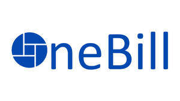

Trade Mark Journal No.2025/028 11 July 2025
UK00004227525 1 July 2025 (9,35,36,42)

- Class 9
- Financial management software; Computer software; Computer software applications; Computer e-commerce software; Computer software packages; Computer software platforms; Computer software [programmes]; Software; Computer software for use as an application programming interface (API); Downloadable computer software for use as an application programming interface (API); Web application and server software; Web server software; Cloud server software; AI software; Server software; Web application software; Mobile apps; Customer relation management [CRM] software; VOIP phones; Enterprise application software [EAS]; Application software for cloud computing services; Mobile application software; Application software for mobile phones; Software for mobile phones; Application software for mobile devices; Computer application software for mobile phones; Downloadable software applications for mobile phones; Business application software; Data management software; Banking software; Payment software; Software for the processing of business transactions; Downloadable computer software for use as an electronic wallet.
- Class 35
- Financial auditing; Financial marketing; Auditing of financial statements; Financial records management; Database management services; Database management; Data processing services; Invoicing services; Billing services.
- Class 36
- Financial banking; Financial and monetary services; Financial transactions; Financial and monetary services, and banking; Financial securities; Financial assistance; Financial services; Financial management; Management (Financial -); Financial evaluations [banking]; Financial brokerage; Brokerage (Financial -); Financial affairs; Financial engineering; Financial consulting; Financial economic analysis; Financial forecasting; Banking and financial services; Financial investment services; Financial information; Information (Financial -); Financial planning; Financial consultancy; Consultancy (Financial -); Financial and monetary transaction services; Financial economic advisory services; Economic research services [financial]; Financial advice; Financial information services relating to financial stock markets; Financial research; Research (Financial -); Financial appraisal; Financial leasing; Personal financial banking services; Financial analysis; Analysis (Financial -); Financial credit services; Financial analyses; Financial evaluation; Financial investment brokerage; Financial exchange; Financial management for businesses; Personal financial planning; Financial loan services; Financial assessments; Financial loan consultancy; Financial savings services; Financial management relating to banking; Financial management of stocks; Financial management of companies; Financial planning services; Financial management services; Financial brokerage services; Financial consultation; Consultations [financial]; Financial payment services; Financial consulting services; Financial planning for retirement; Financial pre-payment services; Financial services relating to business; Financial assessment of company credit; Financial consultancy relating to loans; Financial banking services for the deposit of money; Financial planning and management; Financial management and planning; Financial lending services for personal purposes; Payment processing services; Payment processing; Automated payment services; Electronic payment services; Payment card services; E-wallet payment services; Clearing services for payment transactions; Credit card transaction processing services; Electronic wallet services (payment services); Payment administration services; Remote payment services; Bill payment services; Processing of electronic payments; Electronic processing of payments; Financial transfers and transactions, and payment services; Telegraphic remittance [payment] services; Electronic commerce payment services; Rent payment services ; On-line bill payment services; Processing of payment transactions via the Internet; Debit card payment services; Information services relating to the automated payment of accounts; Collection of payments for goods and services; Credit services for use in the purchase of services; Processing of debit card payments; Processing of electronic check payments; Processing of credit card payments; Automated banking services relating to charge card transactions; Credit services; Financial transaction services; Management services for loan related transactions; Monetary transaction services; Loan services; Banking services relating to the acceptance of fixed interval installment payments; Automated payment; Financial information retrieval services; Escrow services; Advisory services relating to loan services; Automatic recording services for financial transactions; Bill payment services provided through a website; Provision of electronic funds transfer services; Financial information processing; Insurance; Insurance underwriting; Underwriting (Insurance -); Insurance subrogation; Health insurance; Mortgage insurance; Insurance underwriting in the field of professional liability insurance; Medical insurance; Accident insurance underwriting; Insurance broking; Brokerage of insurance; Insurance brokerage; Brokerage (Insurance -); Provision of insurance services to insurance companies; Brokerage of non-life insurance; Property insurance underwriting; Insurance underwriting services; Life insurance underwriting; Underwriting of health insurance (Services for the -); Credit insurance; Transit insurance underwriting; Arranging for financing of insurance premiums; Insurance for businesses; Motor insurance; Life insurance; Insurance consultancy; Insurance underwriting consultancy; Life insurance brokerage; Insurance brokering; Private health insurance; Insurance brokers (Services of -); Mortgage banking insurance; Insurance administration; Vehicle insurance services; Insurance information; Information (Insurance -); Consultations [insurance]; Insurance research; Research (Insurance -); Insurance brokerage services; Arranging of insurance; Arranging insurance; Insurance (Arranging of -); Insurance agency and brokerage; Underwriting of business insurance (Services for the -); Travel insurance services; Insurance of buildings; Insurance brokerage for property; Insurance premium financing services; Home insurance services; Household insurance services; Claim assessments (Insurance -); Provision of mortgage loan insurance; Personal insurance services; Arranging of credit insurance; Motor vehicle insurance services; Arranging of life insurance; Insurance risk management; Arranging of travel insurance; Insurance information and consultancy; Insurance arranging services.
- Class 42
- Software as a service [SaaS]; Platforms for artificial intelligence as software as a service [SaaS]; Software as a service [SAAS] services; IT services; Programming of software for e-commerce platforms; Software as a service [SaaS] featuring software platforms for graphic design; Software customisation services; Data encryption services; Software as a service [SaaS] featuring software for machine learning; Software as a service [SaaS] featuring software for deep learning; Software as a service [SaaS] featuring computer software platforms for artificial intelligence; Software consultancy services; Software as a service; Programming of software for database management.
Adem Ergen
Representative: Onebill